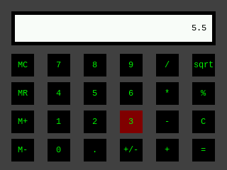
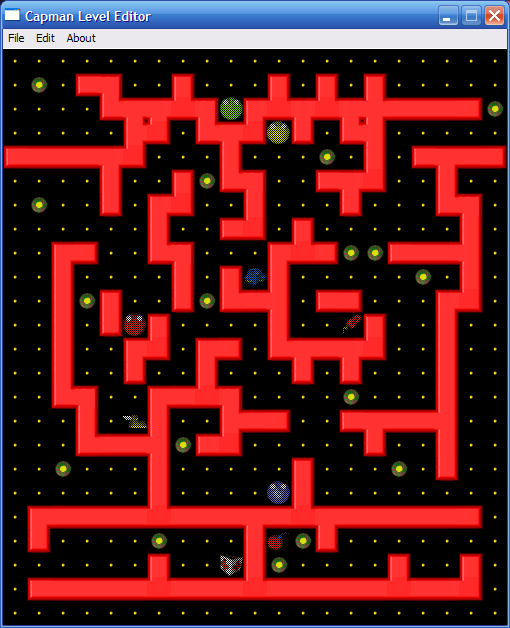
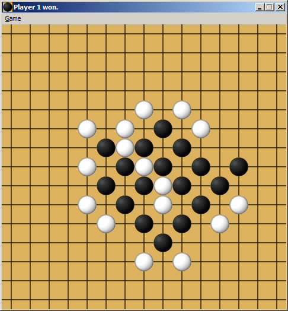
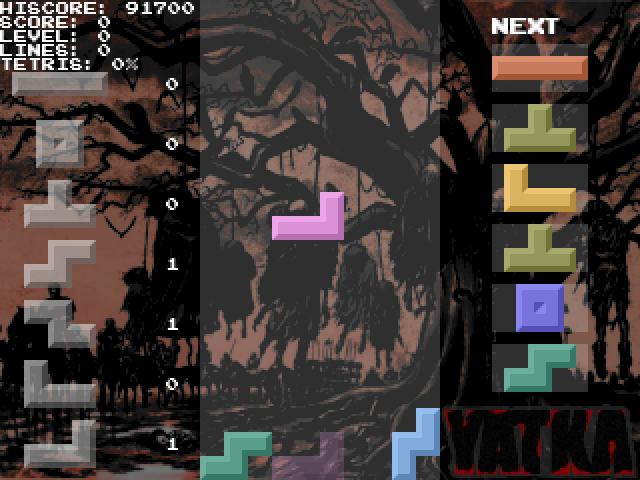

models
You can find some models designed by me at Thingiverse.
print on demand
We offer 3D printing services using FDM technology. Check out our pricing calculator for cost estimation. By default we do not apply any post processing techniques to your model. Reach out for us if you are interested in tailor-made and sophisticated services.
Shipping to Poland only. Prices are estimates and are subject to change. We accept Bitcoin.
Maximum print size is 220 mm x 220 mm x 230 mm.
Contact (e-mail): szymorawski at gmail dot com
my favourites
- Afro Samurai (anime)
- Berserk (anime from 1997 and manga)
- Claymore (anime and manga)
- Cowboy Bebop (anime)
- Dororo (anime from 1969 and manga)
- FLCL (anime)
- Great Teacher Onizuka (anime)
- Hellsing (anime)
- Hokuto no Ken (anime)
- Hyakko (anime)
- Jūni Kokki (anime)
- Nana (anime)
- Neon Genesis Evangelion (anime)
- Oyasumi Punpun (manga)
- Sailor Moon (anime)
- Serial Experiments Lain (anime)
- Shinryaku! Ika Musume (anime)
- Steins;Gate (anime)
- Umibe no Onnanoko (manga)
- Vision of Escaflowne (anime)
- Watashi ga motenai no wa dō kangaetemo omaera ga warui! (abbr. WataMote, anime and manga)
By the way, I would really love to thank authors of Nyaa Torrents. You do a great job!
related work
Berserk - see models, yatka
Claymore - see models
FLCL Progressive - subtitles for BDRip by SweetSub and VCB-Studio
FLCL Alternative - subtitles for BDRip by SweetSub and VCB-Studio
calculator
A simple calculator made with Bittboy in mind. It should not be much hassle to port it for other platforms though.
It should not have been placed in this section as it is not a game, but it is intended to run on a handheld console, so let it be as it is.
capedit2
A level editor for Capman, a Pac-Man clone with some interesting features (e.g. guns). Hopefully, it is more user-friendly than the standard level editor delivered with the game itself. Feel free to do with it whatever you want, I do not maintain it anymore.
Here you can find description of Capman level format. Some of the levels created in capedit2 can be downloaded from here.
gomoku
My implementation of Gomoku, also known as Five in a Row. Feel free to do with it whatever you want, I do not maintain it anymore.
yatka
My implementation of Tetris, started as a 2-day project during a summer break. After a few years the legacy code became foundation of a new Tetris implementation for Bittboy. Development is on hiatus.
ports of 3rd party games
The following games have been ported by me for different platforms. For binaries, see relevant Releases section on GitHub.
H.E.R.O.E.S. - Bittboy (buggy!).
Homing Fever - Bittboy.
Hydra Castle Labyrinth - Bittboy.
just4qix - Bittboy.
l'Abbaye des Morts - Bittboy.
Super Methane Brothers - Bittboy.
Super Transball 2 - Bittboy.
Shisen-Seki - Bittboy.
Shifty Pills - Bittboy.
Wizznic - Bittboy.
AI scripts for Little Fighter 2
If you do not know what Little Fighter 2 is, you can find it out here. If you are familiar with LF2, but you do not know anything about AI scripting, take a look here or here.
A few years ago I created some AI scripts for unofficial custom-made characters. Maybe you will find them useful.
YinYin's Aeron - thread and script.
YinYin and Siegvar's Frozen - thread and script.
YinYin's Silva - download link and script.
miscellaneous
Things too little to give them a separate section, but too noticeable to forget about them.
texture list and map formats of RecWar - click!
music files extracted from PuzzPower 2.0 - click!
12 diode clock
A 12 diode clock, in which each diode represents one digit on the clock face (just like in any analog clock). More information, schematics and source code are available on GitHub.


binary clock
A binary clock with an infrared receiver and a thermometer. More information, schematics and source code are available on GitHub.


USB controlled SMPS
A switched-mode power supply with a forward converter. Output voltage and current limit are possible to control via USB and a knob on the front panel. The device does not need any non-standard drivers as it uses USB HID protocol. More information, schematics and source code of firmware and host software are available on GitHub.

about
This site is yet another project of mine in search of a perfect form.
If you like things I create, consider Bitcoin donation at bc1qxwzvk4qs7geleauw33wylyumf26p8hk677rlla. Tips will be used as I please.